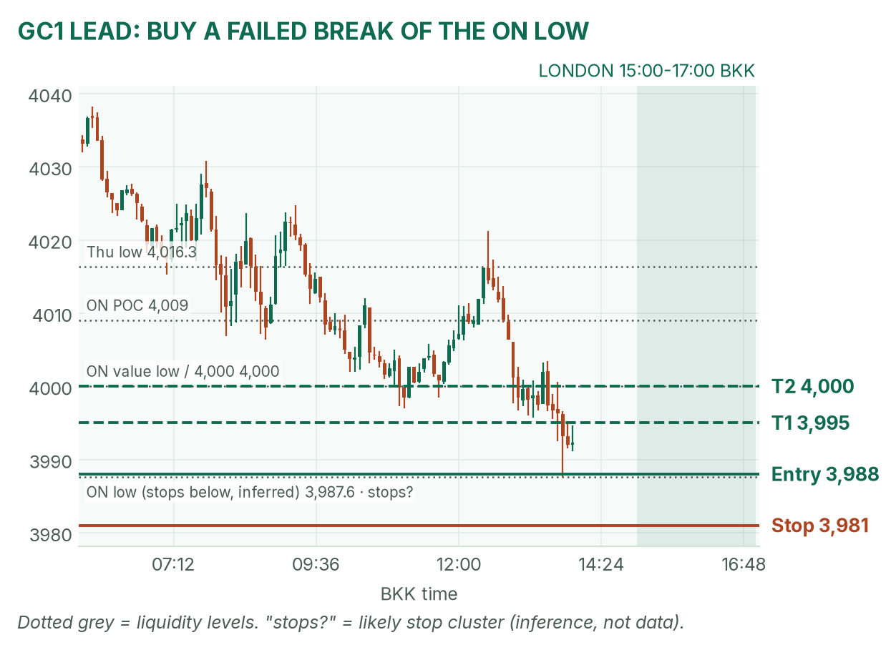
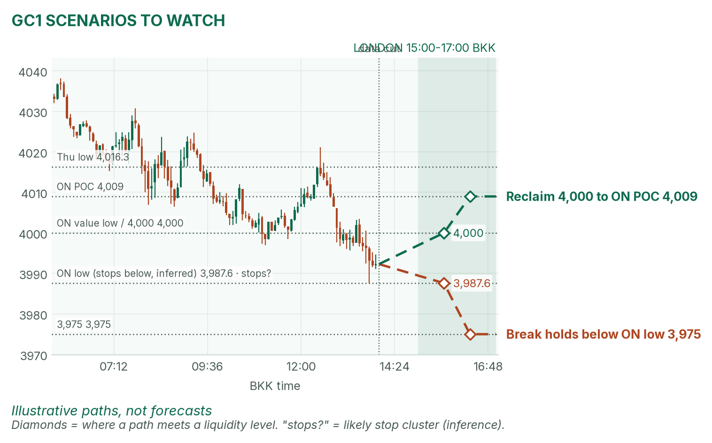
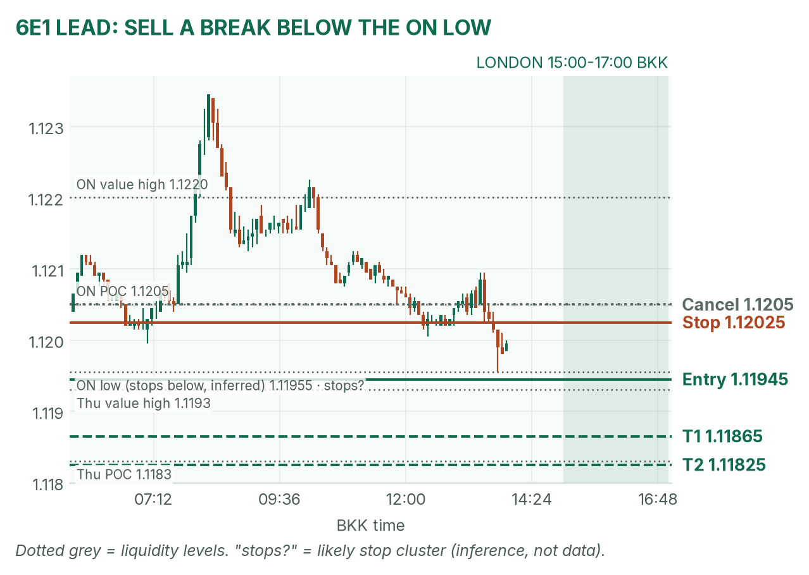
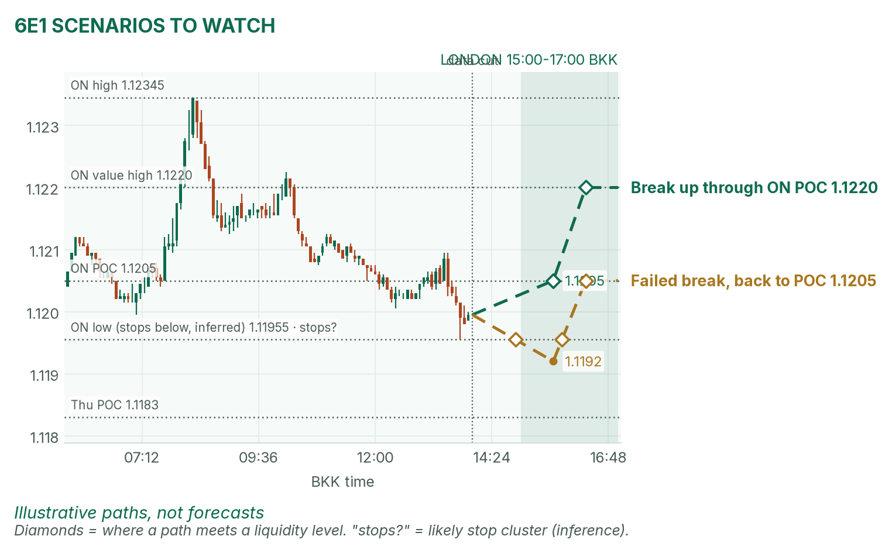

Tech cracked, bonds rallied, and gold still lost $4,000.
Window 15:00–17:00 BKK (UK on winter time since Sunday). Data cut 14:00 BKK: GC 3,992.3, 6E 1.11995 (TopstepX Z26, last complete 5m bar). Levels only. Ideas, not advice.
Summary
GC: buy a failed break of the overnight low. Entry 3,988, stop 3,981, target 4,000 (1.7R). About 36%.
6E: sell a break below the overnight low. Entry 1.11945, stop 1.12025, target 1.11825 (1.5R). About 35%.
Euro-area growth lands at 17:00, right at the close. Be flat by 16:55.
Both leads lean against April's macro read. Treat them as range trades, not trend calls.
The market story
Amazon and Intel disappointed after Thursday's close, and Nasdaq futures fell about 2%. Money ran to bonds: the US 10-year yield dropped to 4.921% and the dollar index slipped 0.20% (CNBC, 12:56). Normally that lifts gold. Not today. Markets still price roughly a 75–80% chance of a December Fed hike (FedWatch readings via April's brief), and remember the lesson: a rate is a price, and gold pays none, so hike odds weigh on it. Gold slid from 4,038.2 at 05:50 to 3,987.6 at 13:45, and every bounce was sold.
The euro spiked to 1.12345 at 08:15, then gave it all back to 1.11955, also at 13:45. April reads the dollar as soft; the chart says sellers have controlled the euro all session.
How I read it: gold is stretched to the downside, near a pile of stops. The euro is drifting lower. Expect a normal London range.
News (BKK)
Time
Event
Forecast
Prior
Read
17:00
Euro-area GDP Q3, first estimate (q/q)
0.2%
0.6%
At the close. Hot helps the euro; cold hurts it.
19:30
US Employment Cost Index Q3
0.8%
0.9%
After the window. Hot wages raise hike odds, cold for gold.
No-trade zone: 16:55–17:02. Be flat by 16:55. Other European releases unconfirmed; check your calendar.
Levels to watch
Level
GC
6E
Overnight high / low (from 05:00)
4,038.2 / 3,987.6
1.12345 / 1.11955
Overnight value area (where 70% of trading happened)
4,000–4,023
1.1202–1.1220
Overnight POC (busiest price)
4,009
1.1205
Thursday high / low
4,081.7 / 4,016.3
1.12055 / 1.1124
Thursday POC
4,037
1.1183
Typical window range (median / 80th pct, 20 days)
16.5 / 21 pts
20 / 28.5 pips
Gold (GC1)
Bias: down on the higher timeframe, but stretched. My London gold rule fades the edges of the 15:00–15:30 range back toward the POC. Below 3,987.6 sit sellers' stops (inferred). A failed run through them beats selling into the hole.
The trade: buy a failed break of the overnight low
Entry
3,987.5–3,988.5 (plan 3,988): after 15:30, price trades under 3,987.6, then a 5m bar closes back above it
Stop
3,981: under the sweep. A sweep is a quick dip that grabs stops and reverses
Targets
1R partial 3,995 · full target 4,000, the value-area low and round number (1.7R)
Cancel
The sweep reaches 3,982 (no room for the stop), or no fill by 16:15
Probability
~36%, an estimate. Basis: a 1.7R target wins about 37% if price were random; London gold range edges mostly snapped back to the POC in my study (not significant). 12 points is under a typical window.
Why: stops below a round-number low often fuel a snap-back. April's brief: disagrees; she flags losing 3,997 as putting $4,000 in play, which has already happened. If gold holds below 3,987.6 on 15-minute closes, there is no long. Let it fall.

GC 5-minute bars to 14:00 BKK, window shaded. A staircase lower from 4,038 into 3,987.6.

Illustrative paths, not forecasts: the break holds and extends, or price reclaims 4,000 toward the POC.
Scenarios to watch
Bearish break: 15m closes below 3,987.6 that stay there. Aims for about 3,975.
Bullish reclaim: a 15m close back above 4,000. Aims for 4,009, the overnight POC.
Euro (6E1)
Bias: mixed. The macro (soft dollar) says up; the session chart says down, under its overnight value area. My London rule for 6E trades breaks of the 15:00–15:30 range.
The trade: bearish range breakout
Entry
1.1194–1.1195 (plan 1.11945), on a 5m close below the 15:00–15:30 range low and 1.11955
Stop
1.12025: back inside overnight value, so the break failed
Targets
1R partial 1.11865 · full target 1.11825, just under Thursday's POC (1.5R)
Cancel
A 5m close above 1.1205 before entry, or no fill by 16:30
Probability
~35%, an estimate. Basis: euro London breakouts averaged +0.31R in my study (26 sessions, not significant); 12 pips is about 60% of a typical window.
Why: it follows the session's selling. April's brief: disagrees; she sees the euro holding gains. If it breaks and closes back above 1.11955 within 15 minutes, get out.

6E 5-minute bars to 14:00 BKK. The 08:15 spike to 1.12345 fully faded.

Illustrative paths, not forecasts: a break up through the POC, and a failed breakdown.
Scenarios to watch
Bullish break: a 15m close above 1.1205, the POC. Aims for 1.1220, the value-area high.
Failed break: a poke under 1.11955 that closes back above it. Aims for 1.1205.
NQ (not traded in London): 28,997, between its 28,821.5 low and 29,180 high.
Before you click
ORB bases. GC London: 15:00–15:30 range, fade to POC. 6E London: 15:00–15:30 range, trade breakouts.
Checklist. 1) Room to today's max loss? 2) Within daily rules? 3) No release within 30 minutes? 4) Agrees with the bias? 5) At a marked level? 6) Setup tagged? 7) Entry, stop, 1R partial, target set? 8) Calm, not chasing?
Reset (60 seconds). Breathe in 4, hold 4, out 6, five times. Name the feeling in one word. Say the plan aloud. "Eager" or "frustrated"? Wait 5 minutes.
TopstepX Z26 bars, read-only; overnight starts 05:00 BKK. Macro, yields and calendar: April's pre-London brief (CNBC, Octa, FedWatch via FXStreet). Thursday's NY ideas scored: GC never triggered, NQ stopped.